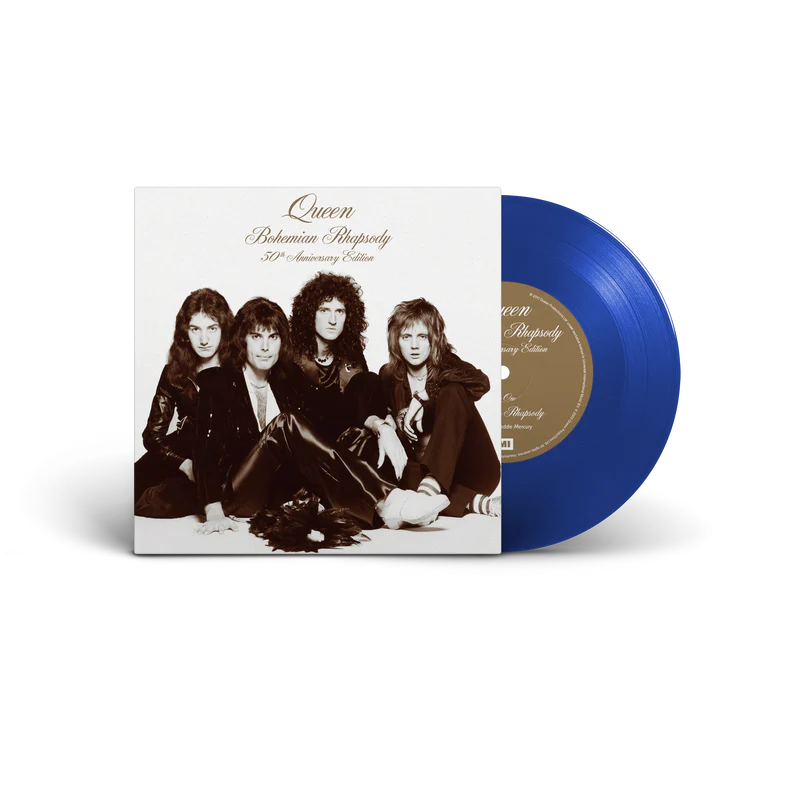
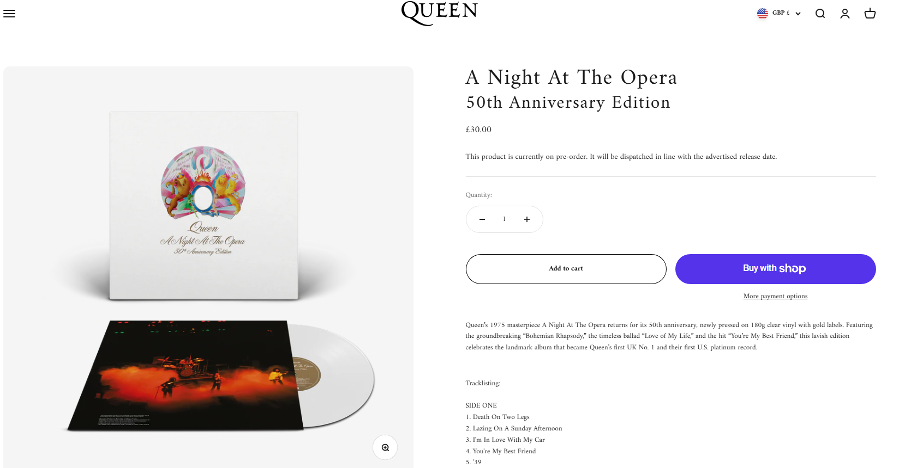
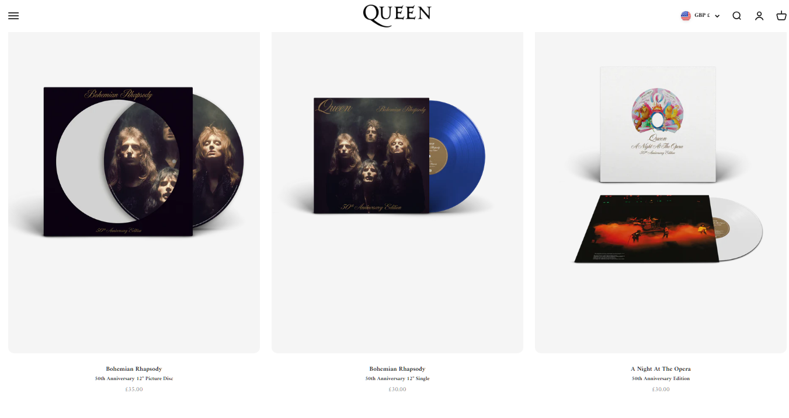

El legendario álbum A Night at the Opera de Queen y su icónico sencillo Bohemian Rhapsody celebran este año su 50.º aniversario con un relanzamiento muy especial en formato vinilo. Esta obra maestra, lanzada originalmente en 1975, marcó un antes y un después en la historia del rock gracias a su fusión de estilos, su innovación en la producción y, sobre todo, por incluir una de las canciones más reconocidas y revolucionarias de todos lostiempos. Medio siglo después, el espíritu creativo de Queen sigue vivo, y esta edición busca rendir homenaje a ese legado musical.
El vinilo de aniversario no solo representa una oportunidad para los coleccionistas y fanáticos de la banda, sino también un regreso a la esencia del sonido clásico. En una era dominada por el streaming y lo digital, escuchar el álbum tal como fue concebido —con la calidez y textura únicas del vinilo— se convierte en una experiencia nostálgica y auténtica. Además, esta reedición resalta el compromiso de Queen y su equipo con la preservación de la calidad sonora y la fidelidad histórica.
El relanzamiento de Bohemian Rhapsody como sencillo en vinilo añade un valor especial a esta celebración. La canción, considerada por muchos como la obra cumbre de Freddie Mercury, rompió todos los moldes de la música popular en su momento: una ópera rock de seis minutos que conquistó las listas de éxitos y redefinió lo que podía ser un single comercial. Medio siglo después, sigue emocionando a nuevas generaciones y mantiene su lugar como una de las piezas más influyentes del rock mundial.
Este aniversario no solo es un hito para los seguidores de Queen, sino también un recordatorio del impacto cultural y artístico que la banda dejó en la música. El relanzamiento en vinilo celebra no solo los 50 años de un álbum y un single, sino también el poder de una obra que desafió las convenciones y que sigue inspirando a músicos y oyentes alrededor del mundo. Sin duda, esta reedición es una invitación a volver a vivir la magia de Queen tal como comenzó: con el brillo y la fuerza de un vinilo girando en el tocadiscos.
